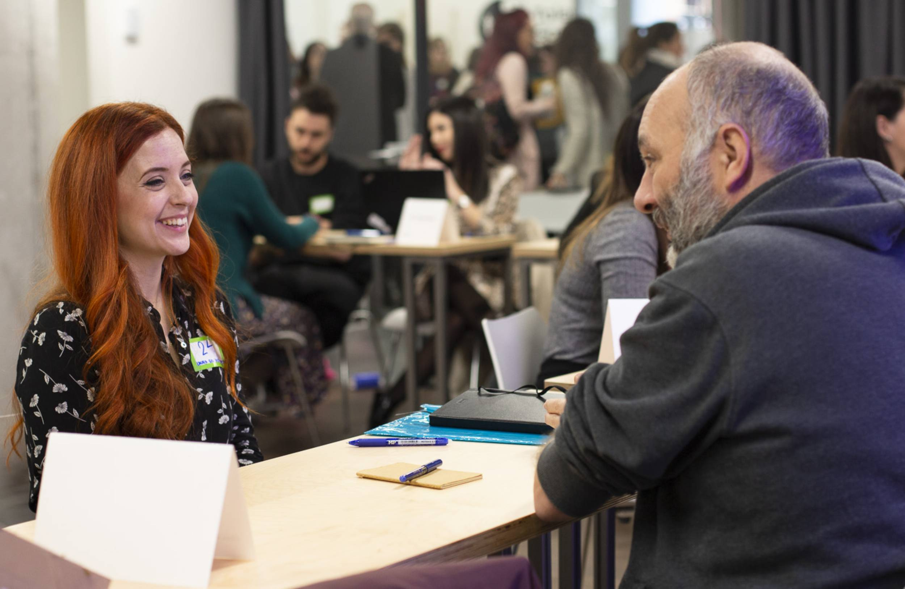

Te apoyamos en la búsqueda de empleo
Al final del Curso Intensivo habrás desarrollado las habilidades para encontrar un empleo de calidad como programadora. Desde Adalab, te acompañamos en el proceso con:

FORMACIÓN EN MARCA PERSONAL
BOLSA DE EMPLEO
TU MENTOR/A PERSONAL
